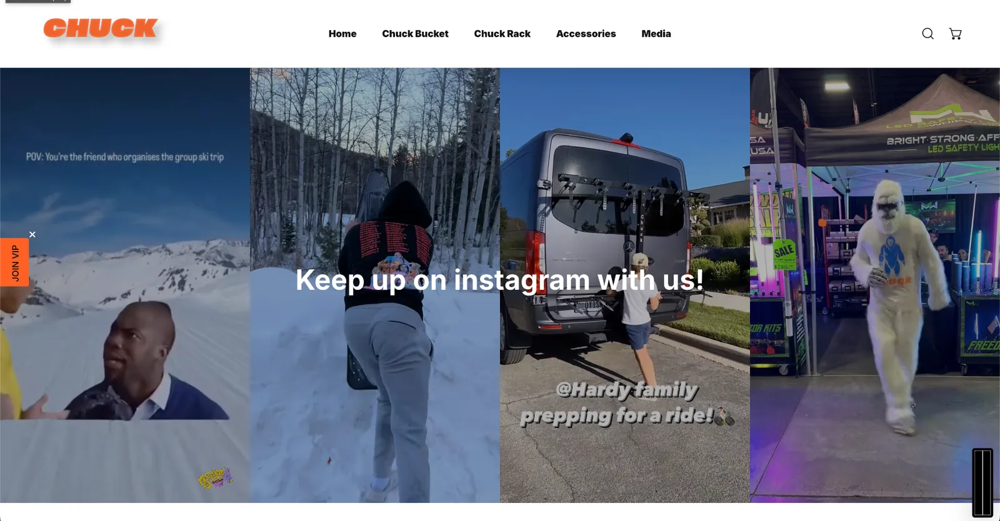

Chuck Rack store
Introduction
I worked with the Excellence and Innovation Initiative at Utah Valley University to develop and update the site chuckrack.com. The business sells ski racks and "buckets" that easily attach to the backs of people's cars. A recent UVU alum had just bought the entire business, and he needed help kickstarting its potential. He reached out to UVU's Excellence and Innovation Initiative, which gathered students according to their majors and helped them work in teams where each role contributed to the client's goals. I was the web designer and developer on this team.
What happened
Over about a month and a half, I worked through two iterations of this website. First I built a Figma version of what everyone on the team agreed the site should look and feel like, complete with presentation functionality, so people could click through the site and navigate it as if it were real. Once we had agreed on the look, I started building the new site in Shopify's site editor, in anticipation of an all-at-once launch. This took about four or five weeks.
I wrote new HTML blocks that could be edited through the Shopify UI, so the owner can easily edit those blocks in the future. By then the team was drawing to a close, but the owner wasn't finished, so he paid me a small fee to do another iteration of the site on a new theme. The new theme required a complete revamp: I had to move each element and change it to fit. This took about two weeks, and after that I launched the second iteration of the site, and our goals had been met.


The store has been updated since I handed it off, so these screenshots show the version I launched.
Conclusion
I learned a lot working on this project, and I'm glad I worked on it. I learned how to work with teams, how to communicate effectively on those teams, and how to get things done. I learned how to meet goals, and how to create a good persona so that these people would want to work with me again.